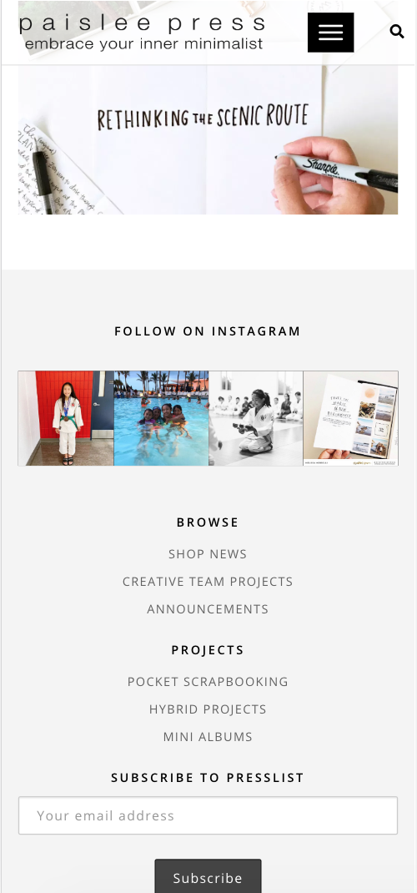
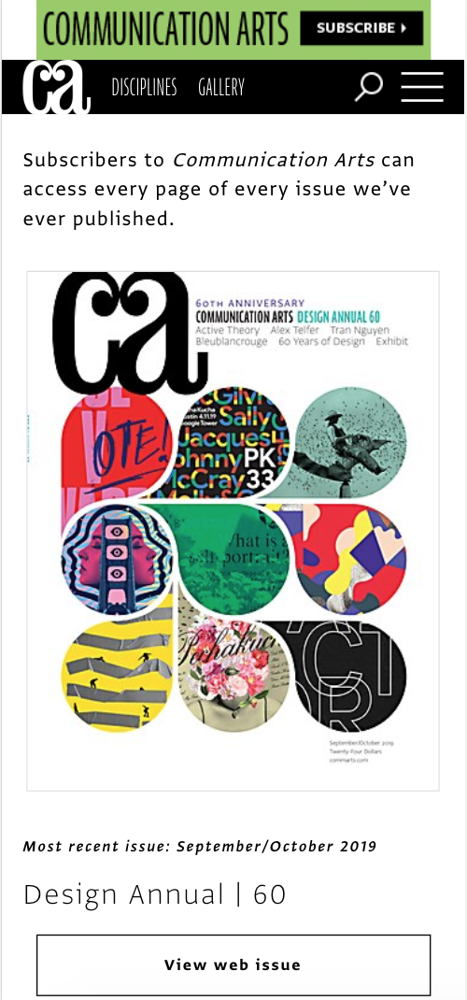
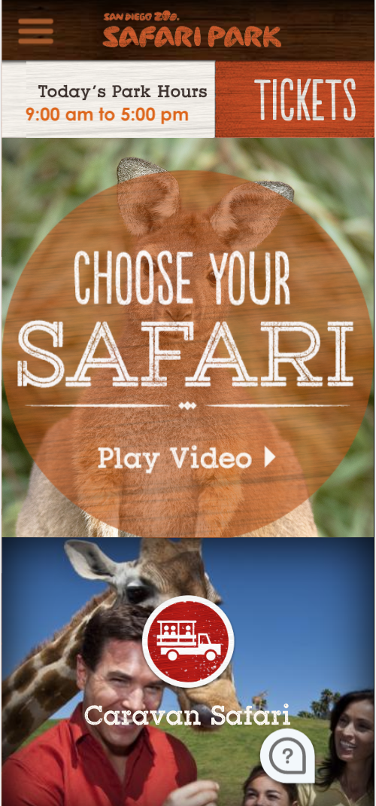

White Space and Clean Design
Paislee Press
Liz Tamanaha is a graphic designer who expertly uses clean lines and white space. Her minimalist designs help both amateur and professional photographers and designer create clean, inspiring layouts.
I chose to highlight Liz's work because the focus of her design aesthetic is simplicity and good use of white space. Her main page features lots of white space with a few beautiful pictures from her Instagram feed and useful, easy to see links to other pages on the site. The banner also uses negative space to effectively communicate what the page is about and what readers can expect from her and her website. Her blog is a place to be inspired and what makes it impactful is the careful use of negative space.
Contrast
Communication Arts
The Communication Arts website is an excellent example of combining many of the design principles to make a site that is both beautiful and functional. For this particular example, I want to focus on their use of contrast to guide the viewer's eye around the page and highlight what's most important.
Arts' subscribe button is black with white letters on a yellow background. All of these colors contrast with each other and draw attention to the button, which is the most important part of the page. Their logo is simple white letters on a black background so the contrast is what draws the eye and makes the logo pop. The logo is then repeated with black letters on a white background and draws the eye further down the page so that the viewer will look at the magazine cover. Their use on contrast, combined with other design principles makes the site interesting and holds the viewer's attention.
Visual Hierarchy
San Diego Zoo Safari Park
The website for the San Diego Zoo Safari Park is a good example of visual hierarchy. As with the other sites I've highlighted the design principles work together to make an impactful site. This site is very simple and clean and that simplicity combined with good visual hierarchy makes it easy for viewers to navigate and find what they need.
Their use of visual hierarchy is interesting because the first thing they want the viewers to do is to play the find your safari video. The link is written in a big display font that draws the attention and is easy to click. The next important thing is the tickets button. It's also big and bold and orange so it stands out and makes it easy for the viewer to buy tickets. The next information they want the viewer to have quickly is the daily park hours followed by the safari park logo and navigation. The designers of this site made it both functional and interesting by making a simple design with good visual hierarchy.